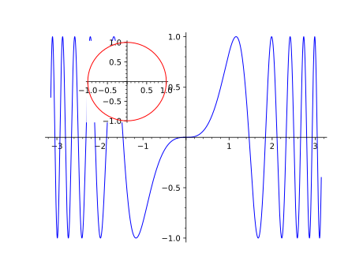

This module defines the classes MultiGraphics and
GraphicsArray. The class MultiGraphics is the base class
for 2-dimensional graphical objects that are composed of various
Graphics objects, arranged in a given canvas.
The subclass GraphicsArray is for
Graphics objects arranged in a regular array.
AUTHORS:
Eric Gourgoulhon (2019-05-24): initial version, refactoring the class
GraphicsArray that was defined in the module graphics.
If one constructs the graphics array from a single list of graphics
objects, one obtains a single-row array:
sage: G=graphics_array([g1,g2,g3,g4])sage: GGraphics Array of size 1 x 4
We note that the overall aspect ratio of the figure is 4/3 (the default),
which makes g1 elongated, while the aspect ratio of g2, which has
been specified with the parameter aspect_ratio=1 is preserved. To get
a better aspect ratio for the whole figure, one can use the option
figsize in the method show():
sage: G.show(figsize=[8,3])
We can access individual elements of the graphics array with the
square-bracket operator:
sage: G=graphics_array([[g1,g2],[g3,g4]])# back to the 2x2 arraysage: print(G)Graphics Array of size 2 x 2sage: G[0]isg1Truesage: G[1]isg2Truesage: G[2]isg3Truesage: G[3]isg4True
Note that with respect to the square-bracket operator, G is considered
as a flattened list of graphics objects, not as an array. For instance,
G[0,1] throws an error:
sage: G[0,1]Traceback (most recent call last):...TypeError: list indices must be integers or slices, not tuple
G[:] returns the full (flattened) list of graphics objects composing
G:
sage: G[:][Graphics object consisting of 1 graphics primitive,Graphics object consisting of 1 graphics primitive,Graphics object consisting of 51 graphics primitives,Graphics object consisting of 2 graphics primitives]
The total number of Graphics objects composing the array is returned
by the function len:
sage: len(G)4
The square-bracket operator can be used to replace elements in the array:
Return the position and relative size of an element of self on the
canvas.
INPUT:
index – integer specifiying which element of self
OUTPUT:
a 4-tuple (left,bottom,width,height) giving the location and
relative size of the element on the canvas, all quantities being
expressed in fractions of the canvas width and height
EXAMPLES:
sage: g1=plot(sin(x),(x,-pi,pi))sage: g2=circle((0,1),1.)sage: G=graphics_array([g1,g2])sage: G.position(0)# tol 5.0e-3(0.025045451349937315, 0.03415488992713045, 0.4489880779745068, 0.9345951100728696)sage: G.position(1)# tol 5.0e-3(0.5170637412999687, 0.20212705964722733, 0.4489880779745068, 0.5986507706326758)
Base class for objects composed of Graphics
objects.
Both the display and the output to a file of MultiGraphics objects
are governed by the method save(), which is called by the rich output
display manager, via
graphics_from_save().
graphics_list – a list of graphics along with their positions on the
common canvas; each element of graphics_list is either
a pair (graphics,position), where graphics is a
Graphics object and position is the
4-tuple (left,bottom,width,height) specifying the location and
size of the graphics on the canvas, all quantities being in fractions
of the canvas width and height
or a single Graphics object; its position
is then assumed to occupy the whole canvas, except for some padding;
this corresponds to the default position
(left,bottom,width,height)=(0.125,0.11,0.775,0.77)
EXAMPLES:
A multi-graphics made from two graphics objects:
sage: g1=plot(sin(x^3),(x,-pi,pi))sage: g2=circle((0,0),1,color='red')sage: G=multi_graphics([g1,(g2,(0.2,0.55,0.3,0.3))])sage: GMultigraphics with 2 elements

Since no position was given for g1, it occupies the whole canvas.
Moreover, we note that g2 has been drawn over g1 with a white
background. To have a transparent background instead, one has to construct
g2 with the keyword transparent set to True:
sage: g2=circle((0,0),1,color='red',transparent=True)sage: G=multi_graphics([g1,(g2,(0.2,0.55,0.3,0.3))])sage: GMultigraphics with 2 elements
We can add a new graphics object to G via the method append():
sage: g3=complex_plot(zeta,(-20,10),(-20,20),....: axes_labels=['$x$','$y$'],frame=True)sage: G.append(g3,pos=(0.63,0.12,0.3,0.3))sage: GMultigraphics with 3 elements
We can access the individual elements composing G with the
square-bracket operator:
graphics – the graphics object (instance of Graphics)
to be added to self
pos – (default: None) 4-tuple
(left,bottom,width,height) specifying the location and size
of graphics on the canvas, all quantities being in fractions of
the canvas width and height; if None, graphics is assumed to
occupy the whole canvas, except for some padding; this corresponds to
the default position
(left,bottom,width,height)=(0.125,0.11,0.775,0.77)
EXAMPLES:
Let us consider a multigraphics with 2 elements:
sage: g1=plot(chebyshev_T(4,x),(x,-1,1),title='n=4')sage: g2=plot(chebyshev_T(8,x),(x,-1,1),title='n=8',....: color='red')sage: G=multi_graphics([(g1,(0.125,0.2,0.4,0.4)),....: (g2,(0.55,0.4,0.4,0.4))])sage: GMultigraphics with 2 elements
We append a third plot to it:
sage: g3=plot(chebyshev_T(16,x),(x,-1,1),title='n=16',....: color='brown')sage: G.append(g3,pos=(0.55,0.11,0.4,0.15))sage: GMultigraphics with 3 elements
We may use append to add a title:
sage: title=text("Chebyshev polynomials",(0,0),fontsize=16,....: axes=False)sage: G.append(title,pos=(0.18,0.8,0.7,0.1))sage: GMultigraphics with 4 elements
graphics – the graphics object (instance of Graphics)
to be added as an inset
pos – (default: None) 4-tuple
(left,bottom,width,height) specifying the location and
relative size of the inset on the canvas, all quantities being
expressed in fractions of the canvas width and height; if None,
the value (0.7,0.7,0.2,0.2) is used
fontsize – (default: None) integer, font size (in points)
for the inset; if None, the value of 6 points is used, unless
fontsize has been explicitly set in the construction of
graphics (in this case, it is not overwritten here)
Construct or modify a Matplotlib figure by drawing self on it.
INPUT:
figure – (default: None) Matplotlib figure (class
matplotlib.figure.Figure) on which self is to be displayed;
if None, the figure will be created from the parameter
figsize
figsize – (default: None) width or [width, height] in inches
of the Matplotlib figure in case figure is None; if
figsize is None, Matplotlib’s default (6.4 x 4.8 inches) is
used
kwds – options passed to the
matplotlib() method of
each graphics object constituting self
OUTPUT:
a matplotlib.figure.Figure object; if the argument figure is
provided, this is the same object as figure.
EXAMPLES:
Let us consider a GraphicsArray object with 3 elements:
If matplotlib() is invoked without any argument, a Matplotlib
figure is created and contains the 3 graphics element of the array
as 3 Matplotlib Axes:
sage: fig=G.matplotlib()sage: fig<Figure size 640x480 with 3 Axes>sage: type(fig)<class 'matplotlib.figure.Figure'>
Specifying the figure size (in inches):
sage: G.matplotlib(figsize=(8.,5.))<Figure size 800x500 with 3 Axes>
If a single number is provided for figsize, it is considered to be
the width; the height is then computed according to Matplotlib’s
default aspect ratio (4/3):
sage: G.matplotlib(figsize=8.)<Figure size 800x600 with 3 Axes>
An example of use with a preexisting created figure, created by
pyplot:
sage: importmatplotlib.pyplotaspltsage: fig1=plt.figure(1)sage: fig1<Figure size 640x480 with 0 Axes>sage: fig_out=G.matplotlib(figure=fig1)sage: fig_out<Figure size 640x480 with 3 Axes>
Note that the output figure is the same object as the input one:
sage: fig_outisfig1True
It has however been modified by G.matplotlib(figure=fig1), which
has added 3 new Axes to it.
Another example, with a figure created from scratch, via Matplolib’s
Figure:
sage: frommatplotlib.figureimportFiguresage: fig2=Figure()sage: fig2<Figure size 640x480 with 0 Axes>sage: G.matplotlib(figure=fig2)<Figure size 640x480 with 3 Axes>sage: fig2<Figure size 640x480 with 3 Axes>
Return the position and relative size of an element of self on the
canvas.
INPUT:
index – integer specifiying which element of self
OUTPUT:
a 4-tuple (left,bottom,width,height) giving the location and
relative size of the element on the canvas, all quantities being
expressed in fractions of the canvas width and height
EXAMPLES:
sage: g1=plot(sin(x^2),(x,0,4))sage: g2=circle((0,0),1,rgbcolor='red',fill=True,axes=False)sage: G=multi_graphics([g1,(g2,(0.15,0.2,0.1,0.15))])sage: G.position(0)# tol 1.0e-13(0.125, 0.11, 0.775, 0.77)sage: G.position(1)# tol 1.0e-13(0.15, 0.2, 0.1, 0.15)
filename – (string) the file name; the image format is given by
the extension, which can be one of the following:
.eps,
.pdf,
.png,
.ps,
.sobj (for a Sage object you can load later),
.svg,
empty extension will be treated as .sobj.
figsize – (default: None) width or [width, height] in inches
of the Matplotlib figure; if none is provided, Matplotlib’s default
(6.4 x 4.8 inches) is used
kwds – keyword arguments, like dpi=..., passed to the
plotter, see show()
Save an image representation of self. The image type is
determined by the extension of the filename. For example,
this could be .png, .jpg, .gif, .pdf,
.svg. Currently this is implemented by calling the
save() method of self, passing along all arguments and
keywords.
Note
Not all image types are necessarily implemented for all
graphics types. See save() for more details.
This method attempts to display the graphics immediately,
without waiting for the currently running code (if any) to
return to the command line. Be careful, calling it from within
a loop will potentially launch a large number of external
viewer programs.
OPTIONAL INPUT:
dpi – dots per inch
figsize – width or [width, height] of the figure, in inches; the
default is 6.4 x 4.8 inches
axes – boolean; if True, all individual graphics are
endowed with axes; if False, all axes are removed (this overrides
the axes option set in each graphics)
frame – boolean; if True, all individual graphics are
drawn with a frame around them; if False, all frames are removed
(this overrides the frame option set in each graphics)
fontsize – positive integer, the size of fonts for the axes
labels (this overrides the fontsize option set in each graphics)
OUTPUT:
This method does not return anything. Use save() if you
want to save the figure as an image.
EXAMPLES:
This draws a graphics array with four trig plots and no axes in any of
the plots and a figure width of 4 inches: